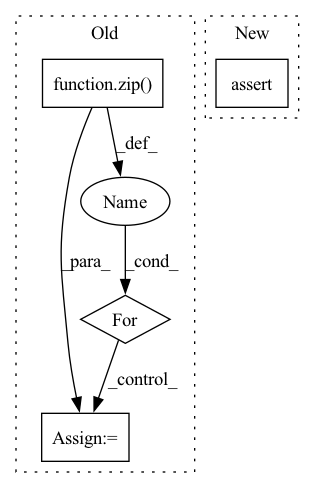

Pattern ID :16910
Before Change
// get metrics
metric_dict = {}
result_list = self._calculate_metrics(trues, preds)
for metric, value in zip( self.metrics, result_list):
key = "{}".format(metric)
metric_dict[key] = round(value, 4)
return metric_dict
def _check_args(self):After Change
true_scores = interaction[self.label_field].to(pred_scores.device)
assert len(true_scores) == len(pred_scores)
return torch.stack((true_scores, pred_scores.detach()), dim=1)
def evaluate(self, batch_matrix_list, *args):In pattern: SUPERPATTERN
Frequency: 5
Non-data size: 4
Instances Fragment ID: 56967605
Project Name: rucaibox/recbole
Commit Name: df66b6285fec567d1f3ca0d6ee9d9ceb71f792b6
Time: 2020-10-20
Author: 1337990880@qq.com
File Name: recbole/evaluator/loss_evaluator.py
M Class Name: LossEvaluator
N Class Name: LossEvaluator
M Method Name: collect(3)
N Method Name: collect(2)
M Parent Class: AbstractEvaluator
N Parent Class: AbstractEvaluator
M File Name: recbole/evaluator/loss_evaluator.py
N File Name: recbole/evaluator/loss_evaluator.py
M Start Line: 63
M End Line: 74
N Start Line: 49
N End Line: 51
Before Change
ms_streams,
)
// Stream-wise MS loss
for ms_out_feats_, ms_pred_out_feats_ in zip( ms_out_feats, ms_pred_out_feats):
loss_ms += compute_ms_loss(ms_pred_out_feats_, ms_out_feats_)
loss = loss_feats + pitch_reg_weight * loss_pitch + ms_weight * loss_ms
After Change
// MS loss
loss_ms = torch.tensor(0.0).to(in_feats.device)
if ms_weight > 0:
assert ms_use_static_feats_only
ms_means = ms_means.expand(
in_feats.shape[0], ms_means.shape[1], ms_means.shape[2]
) Fragment ID: 56967604
Project Name: r9y9/nnsvs
Commit Name: ae203f66794efd580132926777aff7391a7b63d8
Time: 2022-05-02
Author: zryuichi@gmail.com
File Name: nnsvs/bin/train_resf0.py
M Class Name: AnonimousClass
N Class Name: AnonimousClass
M Method Name: train_step(15)
N Method Name: train_step(13)
M Parent Class:
N Parent Class:
M File Name: nnsvs/bin/train_resf0.py
N File Name: nnsvs/bin/train_resf0.py
M Start Line: 60
M End Line: 123
N Start Line: 42
N End Line: 135
Before Change
user_len_list = interaction.user_len_list
pos_len_list = interaction.pos_len_list
true_scores = []
for pos_len, user_len in zip( pos_len_list, user_len_list):
label = torch.tensor(pos_len * [1] + (user_len - pos_len) * [0], dtype=torch.float)
true_scores.append(label)
device = pred_scores.device
true_scores = torch.cat(true_scores, dim=0).to(device)After Change
true_scores = interaction[self.label_field].to(pred_scores.device)
assert len(true_scores) == len(pred_scores)
return torch.stack((true_scores, pred_scores.detach()), dim=1)
def collect(self, batch_matrix_list, *args): Fragment ID: 56967607
Project Name: rucaibox/recbole
Commit Name: 02e4908e16444d2ac273639942b0ab002fea431c
Time: 2020-08-14
Author: 1337990880@qq.com
File Name: evaluator/loss_evaluator.py
M Class Name: LossEvaluator
N Class Name: LossEvaluator
M Method Name: evaluate(3)
N Method Name: evaluate(3)
M Parent Class: object
N Parent Class: object
M File Name: evaluator/loss_evaluator.py
N File Name: evaluator/loss_evaluator.py
M Start Line: 40
M End Line: 47
N Start Line: 36
N End Line: 37
Before Change
dace_module = DaceModule(module, backward=True)
dace_outputs = []
for inp, inp_src in zip( dace_inputs, input_values):
inp.copy_(inp_src)
inp.requires_grad = True
s = dace_module(inp).sum()
s.backward()
dace_outputs.append(inp.grad.clone().detach())
print(dace_outputs[-1])After Change
print("Dace output:")
print(dace_input.grad)
assert np.allclose(pytorch_input.grad, dace_input.grad)
def test_simple(): Fragment ID: 56967603
Project Name: spcl/daceml
Commit Name: 682aea4a22edc4a5268188596bcf443bd041a0a7
Time: 2021-03-01
Author: oliverrausch99@gmail.com
File Name: tests/autodiff/pytorch/test_pytorch.py
M Class Name: AnonimousClass
N Class Name: AnonimousClass
M Method Name: run_pytorch_module(3)
N Method Name: run_pytorch_module(2)
M Parent Class:
N Parent Class:
M File Name: tests/autodiff/pytorch/test_pytorch.py
N File Name: tests/autodiff/pytorch/test_pytorch.py
M Start Line: 13
M End Line: 45
N Start Line: 10
N End Line: 44
Before Change
choice = int(dist.Categorical(logits=response / temperature).sample())
// Update state with choices within the block.
for p, C in zip( block, Cs):
state[p] = choice % C
choice //= C
assert bounds.check(state).all()
After Change
choice = dist.Categorical(logits=logits / temperature).sample()
state[:] = nbhd[choice]
assert bounds.check(state).all()
assert constraint_fn(state)
// Save the best response.
current_logits = float(logits[choice]) Fragment ID: 56967609
Project Name: pyro-ppl/pyroed
Commit Name: f243bc1052485775ec024bd2fd4470857ff8edc9
Time: 2021-09-29
Author: fritz.obermeyer@gmail.com
File Name: pyroed/optimizers.py
M Class Name: AnonimousClass
N Class Name: AnonimousClass
M Method Name: optimize_simulated_annealing(0)
N Method Name: optimize_simulated_annealing(0)
M Parent Class:
N Parent Class:
M File Name: pyroed/optimizers.py
N File Name: pyroed/optimizers.py
M Start Line: 27
M End Line: 80
N Start Line: 28
N End Line: 78